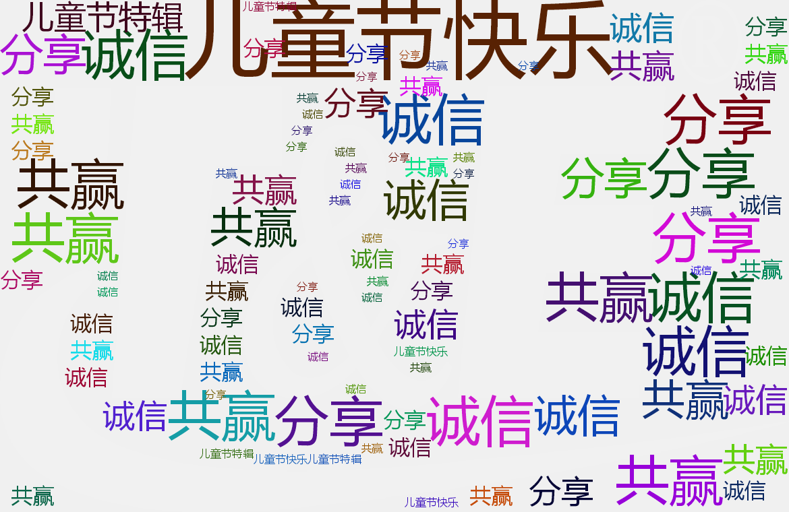
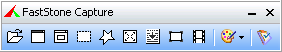
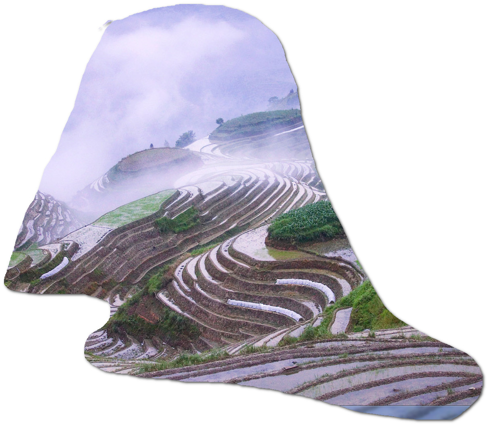
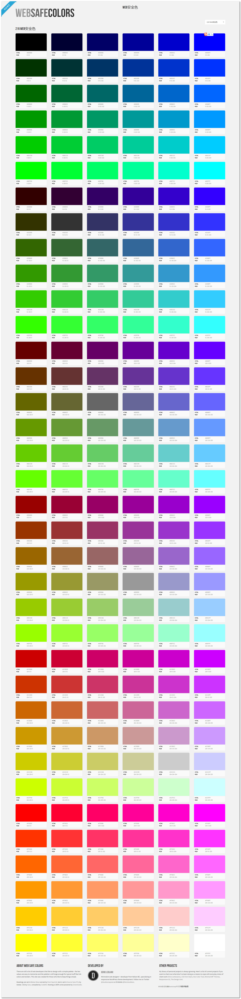
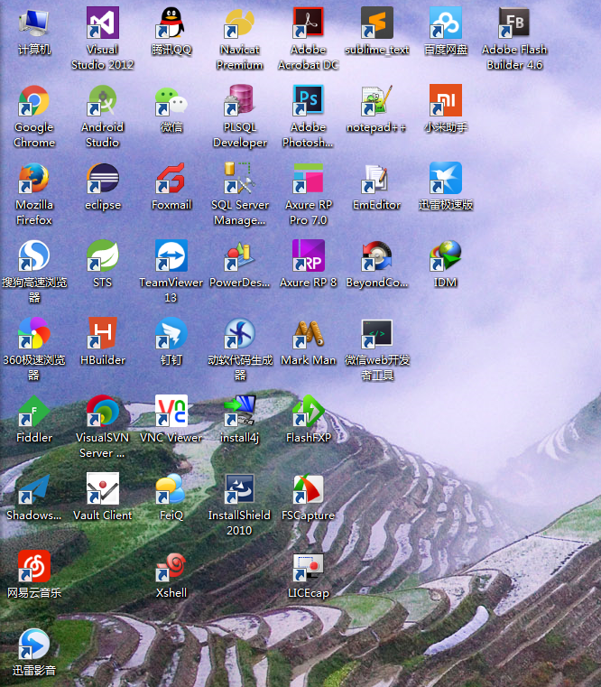
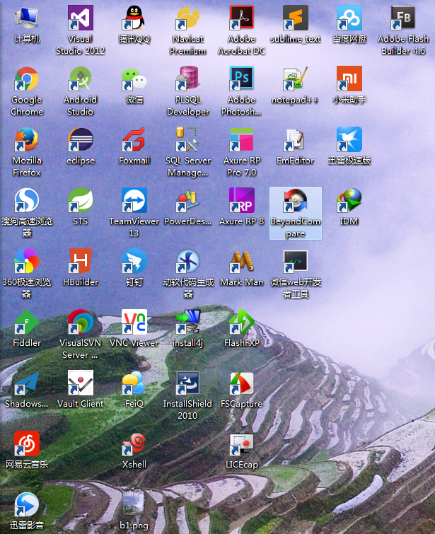
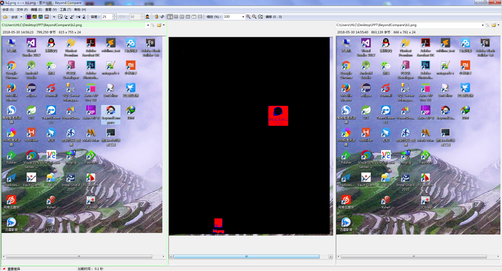
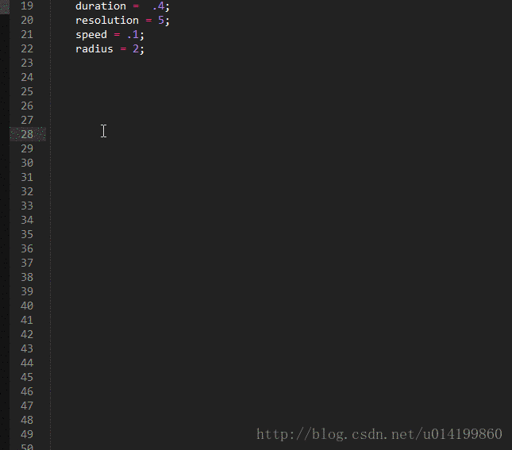
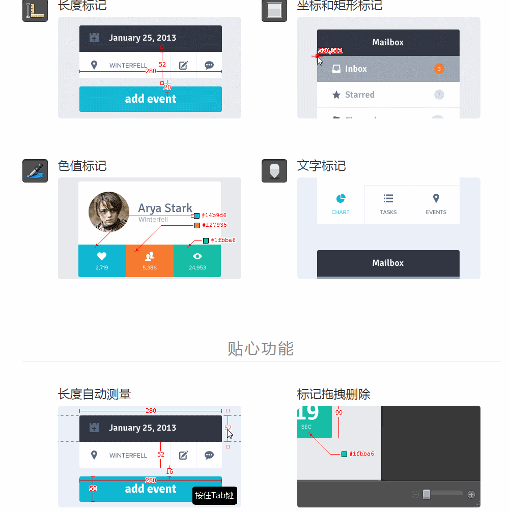

首先
祝大朋友小朋友们节日快乐
然后
一首抒情的音乐送给大家
声明
本次分享不涉及深奥的理论知识，纯属周边内容
理念

好的
本次分享正式开始
实用小工具
FSCapture
BeyondCompare
LICEcap
MarkMan
FSCapture

《FSCapture》是一款抓屏工具，体积小巧、功能强大 1、截图功能（可以捕捉：活动窗口、窗口/对象、矩形区域、手绘区域、整个屏幕、滚动窗口、固定区域）； 手绘区域 滚动窗口 当然，这个也可以作为录屏软件使用，存储格式仅入wmv 附带功能包括： 1、屏幕放大器； 2、屏幕取色器； 3、屏幕标尺； 4、将图像转换为 PDF 文件；
手绘区域--截图

滚动窗口--截图

BeyondCompare
Beyond Compare是一套文件比较工具。 主要用途是对比两个文件夹或者文件，并将差异以颜色标示。比较范围包括目录，文档内容等。 文件对比的功能类似于版本控制工具的show change、diff，看起来的话更直观一些。 这里给大家截图演示的是它对图片的对比效果。
图片对比

BeyondCompare--图片对比

LICEcap
LICEcap 是一款屏幕录制工具，支持导出 GIF 动画图片格式，轻量级、使用简单，录制过程中可以随意改变录屏范围。
LICEcap--录制效果

MarkMan
MarkMan – 马克鳗 是一款方便高效的标注工具，极大节省设计师在设计稿上添加和修改标注的时间，让设计更有爱。 核心功能 贴心功能 使用这个工具还有一个好处就是：让骆风凯省点心
MarkMan--核心功能

MarkMan--贴心功能
